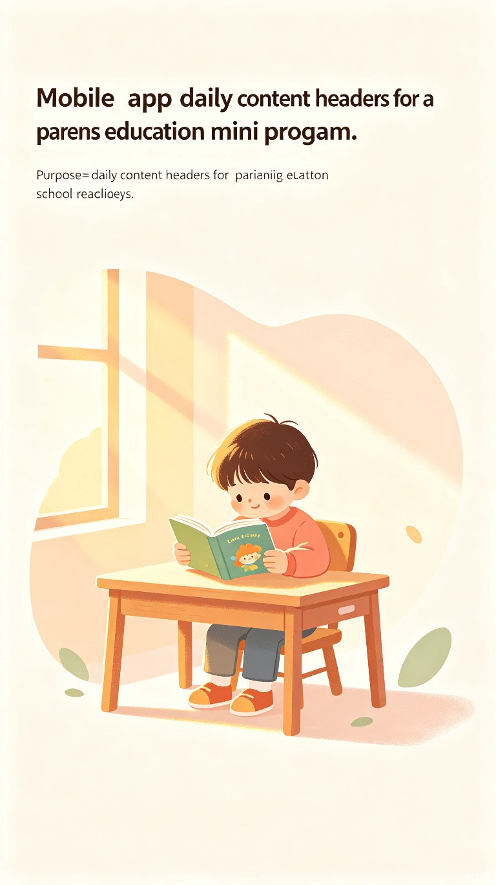
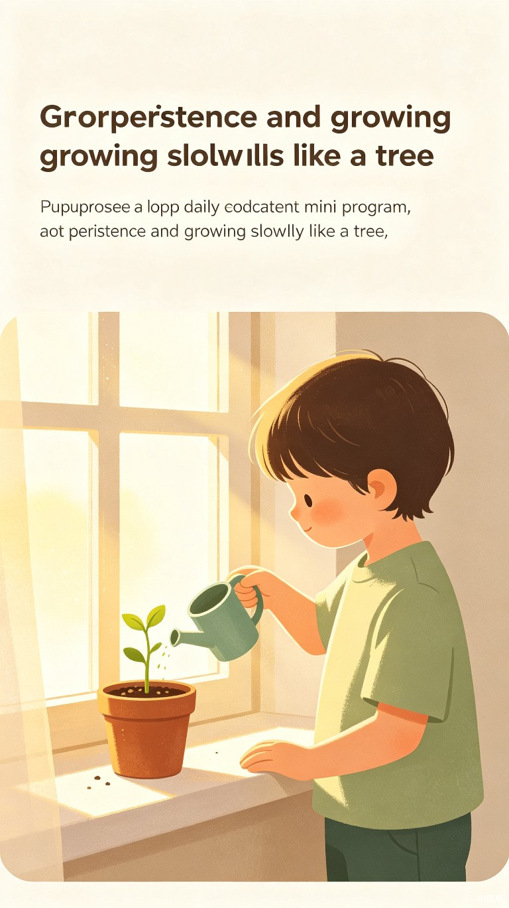

把设计语言沉淀成可复用库，并在关键时调用适配 —— FDE「风格库沉淀 + 关键时调用适配」的实物样本。本任务也是 coding 案例库点名的「给设计总监做风格库沉淀 + 调用」构想的最小可运行版。
从一次性 prompt，沉淀为可复用、可调用的风格规范（style.md）
风格名称：温暖亲子扁平插画
核心特征：扁平、极简、柔和；暖色调为主（奶油白、米色、暖棕、柔和绿/蓝点缀）；孩子形象可爱圆润、表情温柔；场景简洁、大量留白；画面中不出现任何中英文文字。
模型 / 比例：SDXL 1.0（英文 prompt）· 3:4 竖版（1024×1365），适合移动端。
Prompt 固定模板
A young child [动作/场景]. [表情]. [光线]. [配色]. [氛围/金句].
把「不变的风格」拆成可轮换的模块，每日只换变量、守住暖色边界
主色调（每次选 1–2）
点缀色（每次选 1–2）
光线（每次选 1）
氛围（每次选 1）
表情（按主题选）
变的部分（主题/动作）每天从内容提取，不变的部分（风格）锁死在库里
关键机制 · STYLE_LOCK（风格锁定后缀）
STYLE_LOCK = ("warm children's book illustration style, "
"flat minimal shapes, soft rounded character, "
"clean simple background, no text, no letters, no words")
# 每个 day：
prompt = visualHint_en + ", " + STYLE_LOCK # 变量(主题) + 锁定(风格)
visualHint → prompt 对照（day15）
输入（中文，提取自内容）：一个孩子专注地写一个字或读故事书，家长在旁边微笑着观察，桌上摊着一本成长记录本
输出（已锁风格）：
A young child focused on writing a word or reading a storybook, a parent smiling and watching nearby, a growth journal open on the desk. Calm proud expression. Soft warm light. Warm beige, cream white, soft coral accents. Quiet sense of achievement. warm children's book illustration style, flat minimal shapes, soft rounded character, clean simple background, no text, no letters, no words
原样保留，作为 66 天系列视觉一致的基准
| Day | 主题 | Prompt 原文 |
|---|---|---|
| 1 | 学习能力 | A young child sitting peacefully at a small wooden desk, absorbed in reading a picture book. Soft golden afternoon light streams through a window. Warm beiges, soft corals, sage green accents. Calm, nurturing, hopeful. |
| 2 | 专注力 | A young child deeply focused on completing colorful wooden puzzle blocks on the floor. Expression calm and absorbed. Soft natural light. Cream whites, soft lavender, warm beiges, gentle teal accents. Quiet concentration. |
| 3 | 勇气 | A young child standing at the edge of a small stepping stone path, looking ahead with a brave but slightly nervous expression. A parent's gentle hand on the child's shoulder. Warm sunrise colors: soft pinks, warm oranges, gentle yellows. Encouraging, supportive, hopeful. |
| 4 | 坚持 | A young child gently watering a small potted sprout on a windowsill. Soft morning light. The sprout is small but visibly growing. Child's expression gentle and patient. Soft sage green, warm beige, cream white, golden sunlight. Growth happens little by little. |
| 5 | 独立 | A young child proudly putting on their own shoes or tidying toys into a basket. Expression proud and happy. A parent nearby smiling gently, hands behind their back. Soft coral, warm beige, cream white, gentle sky blue. "I can do it myself!" |
| 6 | 好奇心 | A young child looking up at the sky with wide, curious eyes, pointing at a bird or a cloud. Expression full of wonder. Soft afternoon light, gentle blue sky and white clouds. Soft sky blue, warm beige, cream white, golden sunlight. Every question is the beginning of thinking. |
全部由 SDXL 按风格库生成，66 天系列视觉一致，无人工逐张调参


为什么这是个 FDE 样本，而非普通「AI 生图」
方法论（第一性原理）：配图的本质需求是「一致的温暖亲子感」，不是「每天写一条新 prompt」。所以把可变部分（主题/动作，每天从内容提取）和不变部分（风格，锁死在库里）解耦——这正是 FDE 的迷你版：把专家知识沉淀成可复用资产，在关键时调用适配。